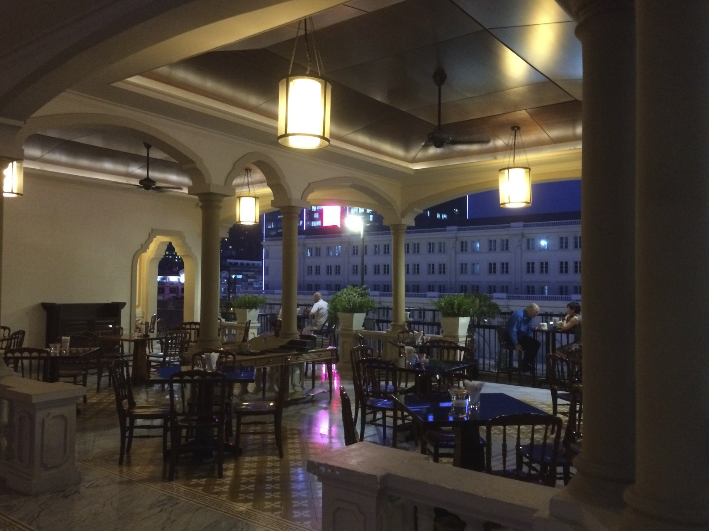
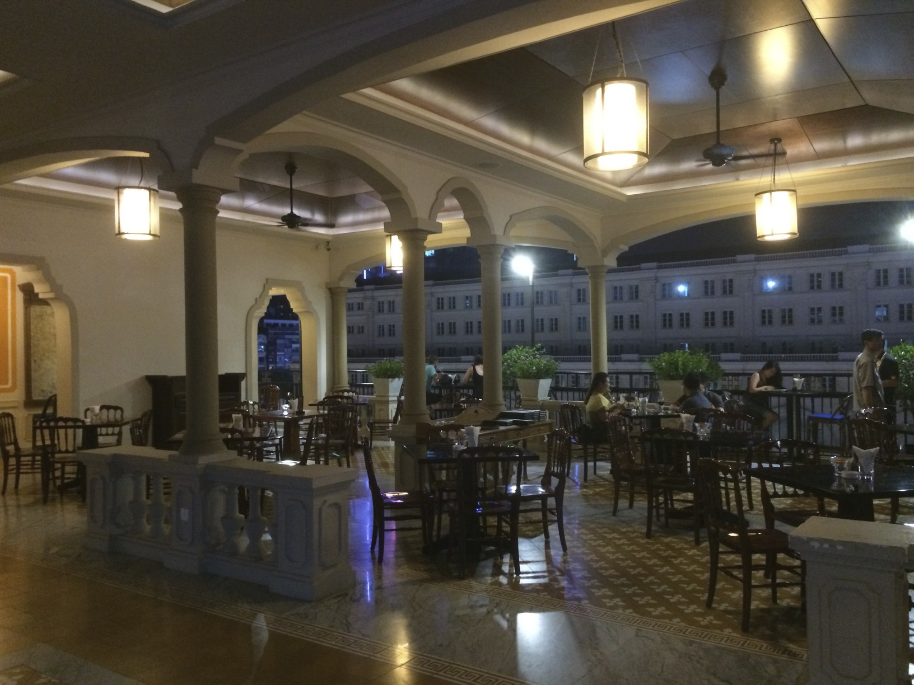

Rex Hotel à Saïgon
Le premier à m'en parler a été mon beau-père (Merci Henry !). Il m'a dit : « Quand tu vas à HCMC, est-ce que tu restes dans le célèbre Hôtel Rex ? ». Je n'en avais jamais entendu parler, mais il m'a raconté que les Américains y séjournaient pendant la guerre américaine (c'est ainsi qu'ils appellent cette guerre ici au Vietnam). En organisant des réunions ici à Saïgon, un autre homme que je devais rencontrer a proposé une liste d'hôtels où nous pourrions nous rencontrer, et quand j'ai vu le Rex, je l'ai immédiatement choisi. De plus, il était dans notre budget.
Alors, qu'est-ce qui rend le Rex Hotel spécial ? Certainement son histoire. Et le style est spécial et inhabituel. Ce n'est pas un hôtel de luxe ultra-moderne, mais il est décontracté et possède de nombreuses caractéristiques.
Il est très bien situé, en plein centre de Saïgon

Voici la place juste en face du Rex Hotel :
Il a une belle zone d'entrée qui correspond au besoin asiatique de se montrer

Les chambres sont agréables, spacieuses et propres. Et le meilleur : Pas de moquette !


Ils ont le célèbre bar sur le toit – bien qu'il soit assez vide chaque fois que je vérifie :


Ils ont plusieurs piscines. Voici la centrale et la plus grande :

Et ils ont un court de tennis. Oui, au milieu de la super-animée Saïgon, ils ont un court de tennis en plus de tout :

Puisque courir dans les rues de Saïgon n'est pas amusant (les plages de Da Nang me manquent !), j'ai utilisé leurs tapis de course et la piscine chaque matin :

En plus du fait que les plages sont 100 fois plus agréables, la musique dans le studio de fitness vous achève vraiment !
Quoi qu'il en soit, c'était agréable de séjourner ici.